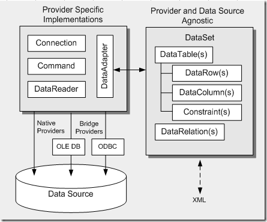

ADO.NET is a set of computer software components that provides data access services that can be used by programmers to connect and interact with relational databases. It is a part of the base class library that is included with the Microsoft .NET Framework. It is commonly used by programmers to access and modify data stored in relational database systems, though it can also access data in non-relational sources.
ADO.NET supports two types of architecture :
ADO.NET architecture consists of the following components :

The Connection object is used to establish a connection with the database. It is present in the System.Data.SqlClient namespace. It has the following properties and methods :
Example :
Dim con As New SqlConnection("Data Source=ServerName;Initial Catalog=DatabaseName;User ID=UserName;Password=Password")
con.Open()
'Statements
con.Close()
con.Dispose()The DataProvider in ADO.NET is a set of components including the Connection, Command, DataReader, and DataAdapter objects that are used to connect to a database, execute commands, and retrieve results. It provides a bridge between an application and a data source for retrieving and saving data.
Example :
Imports System.Data.SqlClient
Module Program
Sub Main()
' Connection string specifying the database connection details
Dim connString As String = "Data Source=myServerAddress;Initial Catalog=myDatabase;User Id=myUsername;Password=myPassword;"
' Create a SqlConnection object with the connection string
Using conn As New SqlConnection(connString)
' Open the connection
conn.Open()
' SQL query to execute
Dim sqlQuery As String = "SELECT * FROM Employees"
' Create a SqlCommand object with the query and connection
Using cmd As New SqlCommand(sqlQuery, conn)
' Execute the query and retrieve data using SqlDataReader
Using reader As SqlDataReader = cmd.ExecuteReader()
' Process the results
While reader.Read()
' Output data to console
Console.WriteLine("{0} {1}", reader("FirstName"), reader("LastName"))
End While
End Using
End Using
End Using
End Sub
End Module
The Command object is used to execute a command against the database. It is present in the System.Data.SqlClient namespace. It has the following properties and methods :
Example :
Dim cmd As New SqlCommand("SELECT * FROM Employee", con)
Dim dr As SqlDataReader = cmd.ExecuteReader()
While dr.Read()
'Statements
End While
dr.Close()The DataReader in ADO.NET is a forward-only, read-only cursor that provides a high-performance way to read data from a database. It's used to retrieve a read-only, forward-only stream of data from a database. This makes the DataReader a good choice for retrieving large amounts of data efficiently.
DataReader provides a high-performance way to read data, as it retrieves data as soon as it becomes available, rather than waiting for the entire results of the query to be returned.DataReader can only move forward through the results of a query, not backward. Once a row has been read, it cannot be read again.DataReader cannot be used to update data in the database. It's only used for reading data.DataReader keeps the connection to the database open while it's being used, which means that you can't use the same connection to perform other tasks until you've finished with the DataReader.Example :
Imports System.Data.SqlClient
Module Program
Sub Main()
' Connection string specifying the database connection details
Dim connString As String = "Data Source=myServerAddress;Initial Catalog=myDatabase;User Id=myUsername;Password=myPassword;"
' Create a SqlConnection object with the connection string
Using conn As New SqlConnection(connString)
' Open the connection
conn.Open()
' SQL query to execute
Dim sqlQuery As String = "SELECT * FROM Employees"
' Create a SqlCommand object with the query and connection
Using cmd As New SqlCommand(sqlQuery, conn)
' Execute the query and retrieve data using SqlDataReader
Using reader As SqlDataReader = cmd.ExecuteReader()
' Process the results
While reader.Read()
' Output data to console
Console.WriteLine("{0} {1}", reader("FirstName"), reader("LastName"))
End While
End Using
End Using
End Using
End Sub
End Module
The DataAdapter is a part of the ADO.NET data provider that acts as a bridge between a DataSet and a data source for retrieving and saving data. It is used to retrieve data from a data source and populate a DataSet with the data, and to update the data source with changes made to the DataSet.
The DataAdapter has the following properties and methods :
The DataSet is a disconnected, in-memory representation of data that is retrieved from a data source. It is used to store data in the form of tables, rows, and columns. The DataSet can hold multiple tables, relationships between tables, and constraints on the data. It is used to work with data in a disconnected environment, where the connection to the database is closed after the data is retrieved.
ADO.NET is a powerful tool for data access in .NET applications. It provides a rich set of classes and components that can be used to interact with relational databases. By using ADO.NET, developers can easily connect to databases, execute commands, and retrieve and manipulate data. It is a versatile and flexible data access technology that can be used to build a wide range of database-driven applications.